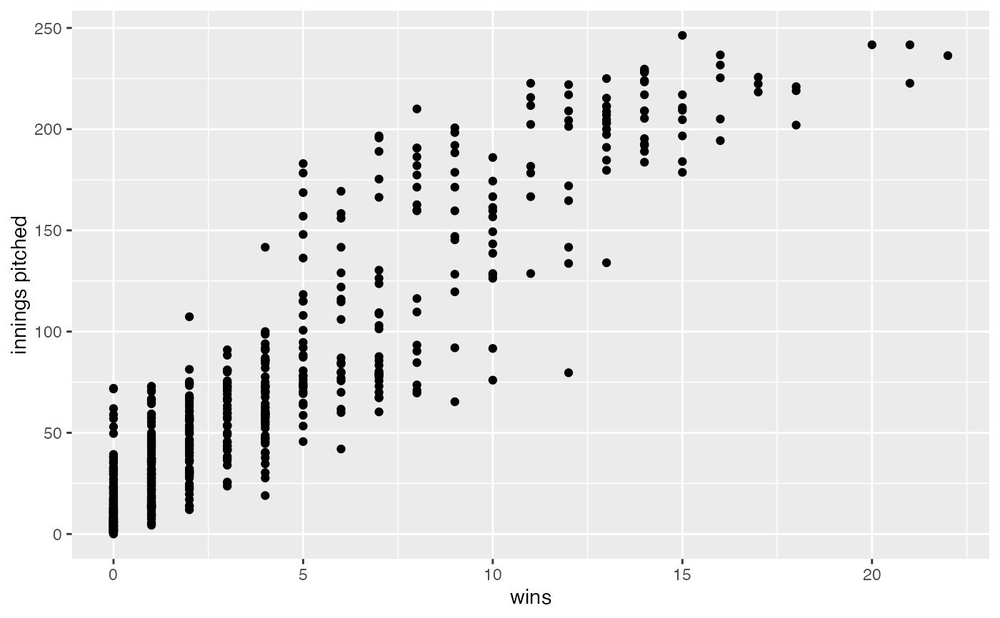

Major League Baseball pitching statistics for the 2005 season.
A data frame with 653 observations on the following 26 variables.
playerID unique identifier for each player
yearID year
stint for players who played with
multiple teams in the same season, stint is increased by one each
time the player joins a new team
teamID three-letter identifier for team
lgID league team plays in, coded as AL or NL
W wins
L losses
G games played in
GS games started
CG complete games
SHO shut outs
SV saves recorded
IPouts outs recorded (innings pitched, measured in outs rather than innings)
H hits allowed
ER earned runs allowed
HR home runs allowed
BB walks (bases on balls) allowed
SO strike outs
ERA earned run average
IBB intentional walks
WP wild pitches
HBP number of batters hit by pitch
BK balks
BFP batters faced pitching
GF ratio of ground balls to fly balls
R runs allowed
data(Pitching2005)#> Warning: data set ‘Pitching2005’ not foundgf_point(IPouts/3 ~ W, data = Pitching2005, ylab = "innings pitched", xlab = "wins")